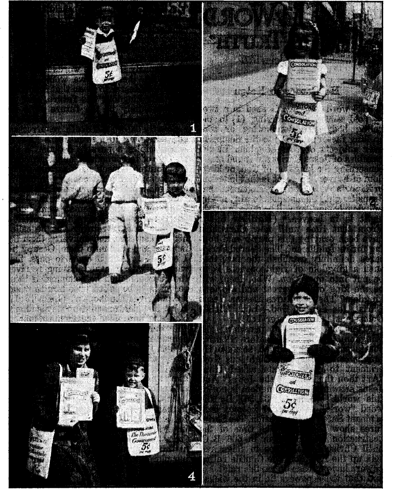

F
The Carpetbag Government of Vichy France 3
The Putsch Was Made Ready Beforehand 3
Balkan Hatred of the “New Order”
Lack of Mercy Promotes Hatreds
How Will the Tide of Hatred Pass? 10
The Shrill and Insistent Cry for Liberty
Distributors of Consolation at Sedalia
Jehovah’s witnesses and the Kingdom
“Thy Word Is Truth”
Presenting “This Gospel of the Kingdom”
Manuscripts and Versions of the
Published every other Wednesday by
WATCHTOWER BIBLE AND TRACT SOCIETY, INC.
117 Adams St., Brooklyn 1, Y., U. S. A.
OFFICERS
President N. H. Knorr
Secretary W. E. Van Amburgh
Editor Clayton J. Woodworth
' Five Cents a Copy
$1 a year in the United States $1.25 to Canada and all other countries
NOTICE TO SUBSCRIBERS
Remittances: For your own safety, remit by postal or express money order. When coin or currency is lost in the ordinary malls, there is no redress. Remittances from countries other than tho^e named below may be made to the Brooklyn office, but only by International postal money order.
Receipt of a new or renewal subscription will be ac* knowledged only when requested. Notice of Expiration is sent with the journal one month before subscription expires. Please renew promptly to avoid loss of copies. Send change of address direct to us rather than to the post office. Your request should reach us at least two weeks before the date of issue with which it is to take effect. Send your old as well as the new address. Copies will not be forwarded by the post office to your new address unless extra postage is provided by you.
Published also in Greek, Portuguese, Spanish, and Ukrainian.
OFFICES FOR OTHER COUNTRIES
England 34 Craven Terrace, London, W. 2
Australia 7 Beresford Road, Strathfleld, N. S. W. South Africa 623 Boston House, Cape Town
Mexico Calzada de Melchor Ocampo 71, Mexico, D. F. Brazil Caixa Postal 1319, Rio de Janeiro
Argentina Calle Honduras 5646-48, Buenos Aires
Entered as second-class matter at Brooklyn, N. Y..
' under the Act of March 3, 1879.
: .Less Driving, Fewer Lives Lost
♦ The reduction in the use and speed of automobiles has saved thousands of lives. The estimated total of deaths resulting from accidents in this field was 28,000 in 1942, to compare with nearly 40,000 in 1941. This is a drop of nearly 12,000, or 30 percent. Cities of over 500,000 inhabitants showed a 17-percent fatality drop in the first eleven months of the year. Accidents, however, are claiming more victims per accident when they do occur, due to the fact that car pooling means more passengers per car. Reports also show an increase in drinking drivers. Until Armageddon cleans up the earth there will still be people who are willing to risk their own lives and those of others for the pleasure of gratifying their depraved appetites. Another factor that has tended to offset the favorable situation is that dimouts reduce the vision of drivers from 40 to 60 percent. But for this the number of accidents would be even less.
Sneezed Germs Travel 100 M.P.H.
♦ Common cold germs, propelled by a sneeze, hunt new victims at a speed of more than 100 miles an hour, the Air Hygiene Foundation reported (Sept. 30, 1940) in Pittsburgh, Pa. “An unstifled sneeze sprays the air with thousands of droplets, some of which travel twelve feet and at a rate as high as 150 feet a second,” said a bulletin of the Foundation.—World Almanac.
+
Lutherans Do Believe in the Devil
♦ The Consolation of March 1, 1944, on page 21, quoted from the Gloversville and Johnstown (N. Y.) Leader-Republican, February 21, 1934, as follows: “However, 100 percent of the Lutheran clergy replied that they did not believe in the devil.” We are advised the word “not” should not have appeared in the above. Consolation hereby corrects the error. *
“And in His name shall the natiohs hope.”—Matthew 12:21, A.R.V. 4
Volume? XXV Brooklyn, N. Y., Wednesday, April 12, 1944 Number 641
HE carpetbag government of Vichy France is like the carpetbag government that was established in the Southern states after the Civil War. One of these is just a memory now, and the other is passing.
At the time when the Germans were dividing France from Britain physically, by their drive to the channel ports west of Belgium, the New York Times said editorially, and, no doubt, believed it to be the absolute truth, that “the alliance between France and Britain is unbreakable. From his conference in Paris Mr. Churchill brought back to London a renewal of ‘the most sacred pledges that, whatever happens, France will fight to the end, be it bitter or be it glorious’.”
In less than a month from the time that statement was made the farce that ' had its headquarters at Vichy, and still has it there, was referred to by Mr. Churchill himself as a “sincere and loyal collaboration with Herr Hitler in his scheme for establishing a so-called new order in Europe”. It is not convenient for Mr. Churchill to link up the pope with this so-called “new order”. It would not be profitable politics. But everybody knows that the pope is as urgently talking about this “new order” as is his disciple and fellow Catholic, Mr. Hitler, and that they both refer to the same thing, the re-establishment in Europe of the so-called “Holy Roman Empire” of superstition, greed, falsehood, oppression, ignorance, torture, and murder, all so that the Big Church, Big Politicians and Big Business crowd may have beneath them, bearing them up, a horde of abject slaves.
The official explanation of the naVy department at Washington (by its spokesmen Col. William J. Donovan and Edgar Mowrer), as to how it happened that the people of southern France had this worse than no government wished upon.them, or foisted upon them, contains this explanation, which, it should also be noticed, carefully avoids any mention of the Roman Catholic Hierarchy or the Royalists, and touches the Big Business conspirators against the French Republic but softly and gently:
What happened to the French officers ? Simply this: for the most part they had ceased to believe in freedom, democracy or any of the slogans which alone could galvanize the entire country. While not exactly proFascist (and certainly not pro-German), they were hostile to the Third Republic; many had come to believe that an authoritarian regime like that of Italy and Germany was really preferable. It would, they thought, save the position of the privileged classes and really save France from the disagreeable necessity of defending herself. If there was to be a war, then let it be against the Bolsheviki. In other words, at least half and perhaps the majority of influential French citizens had come to believe what Herr Hitler wanted them to believe. *
The Putsch Was Made Ready Beforehand
Others have as long memories as Mr. Donovan and Mr. Mowrer and are not afraid to place the blame for France’s downfall squarely on the shoulders of
those "hostile to the Third Republic”, and to tell who they were and are. It isn’t so long since soldiers were transporting munitions for the Roman Catholic secret society of Les Cagoulards (hooded men) then planning for the very thing that took place, when one of the soldiers dropped his box, with the result that 200 cases exploded, each containing 32 hand grenades. The result was the death of 1.8 soldiers and civilians, arms, legs and parts of bodies being found as far as a hundred feet away from the place where the explosion occurred.
This made a stir, and the police in a sh ort time uncovered five different caches of arms and ammunition, and could have uncovered a hundred times as many. Two tons of explosives found in one of the caches -were of such a nature that they could have blown up one-fourth of Paris. In another cache, concealed behind a stairway, there were seven tons of ammunition, six machine guns and twenty-eight cases of hand grenades. In a cache in southern Prance itself, there were found in perfect condition, hidden under a bridge, Iwo machine guns,* 11 Mauser rifles, and 10,000 rounds of ammunition. These are but isolated instances of what was taking place all over France, and certainly, as all intelligent and honest people who know anything at all about the banner spy system of the earth must admit, it could never have been done without the knowledge and connivance of that greatest of all foes of republics, the Roman Catholic Hierarchy.
Collaboration Began Early
Vichy’s collaboration with the pope’s “new order” began at once, and, as soon as conditions wmuld permit, all its civil and military servants were gone over “with a fine-tooth comb” (says the French writer Pcrtinax) and everybody loyal to the French Republic was combed out.
It took a little while for the British to catch on to what was going on in Vichy, but the news got around, through the American state department and in other
4
ways, and at length the London Economist made the businesslike matter-of-fact statement:
By collaborating with the invader, they have finally and utterly discredited any ideas or principles for which they profess to stand; and since these ideas are supposedly Christian, authoritarian and traditional, the natural reaction against Germany is now tending to take Inevitably an anti-Christian, anti-traditional and revolutionary line. Any statesman of reasonable intelligence could have foreseen this development; but fear, cupidity and blind prejudice, not reason and good-will, have been the mainsprings of action at Vichy.
Long before the American armada landed in Northwest Africa, it was widely known not only that the Vichy government had agreed to give Germany control of all. important war installations, railways and ports in Unoccupied France, but that she was letting the Nazis enter and leave Tripoli by way of Tunisia. And it is common knowledge that when the American troops reached Tunisia, which they did in short order, they found the whole northern and eastern coast of the country in the hands of the Germans. How did so many Germans get into Tunisia so suddenly if not with Vichy’s knowledge and consent? Berlin claims that the French Mobile Guards actually aided the passage of Hitler’s troops through France.
Collusion with Japan
One of the reasons that Singapore, the Straits Settlements and Burma fell into the hands of the Japanese is that IndoChina was offered to them on a silver platter by Vichy France. Of course, Vichy’s claim is that she was without strength in Indo-China, could not safeguard the country, and therefore accepted the Japanese “proposals” as finally ratified between Admiral Kato and Admiral Darlan. But not a finger was lifted to stave off the “protectors”. Not even a popgun was fired. What probably took place was that the Vichy
consolation crowd was given the inside tip that papa would he better pleased if the doors were thrown wide open to the new ‘saviors’ of the Eastern world, the Japanese. But it made a bad hit in London. A dispatch from there, in the Vancouver Daily Province,, said:
For a year, a treacherous government in the hands of the enemy has allowed Japan to enter Tndo-China, to occupy her ports and her landing fields, to confiscate all her resources for Japanese war needs and finally to transform the whole country into an initial base and an' arsenal for Japanese aggressions. In handing over French territory, the Vichy government has not only been a traitor to France but also to the Allies of our country.
Once in a while some Britisher comes out and speaks his mind regarding the Roman Catholic Hierarchy, but the common or garden variety of politician never does so, because he knows that it would mean his finish. And, rarely, one who is a subject of the pope and chances to Jive in Britain or some of her commonwealths tells the truth also, and makes the fire fly. That is what the former Mayor Camillien Houde, of Montreal, did when he said at a Y.M.C.A. supper:
You appear to be surprised when I say the sympathies of the French-Canadian would be with Italy in the event, of a war between that country and England. [This was before the attack on Poland, at which time Britain jumped into the fray.] I would ask you to remember that the great majority of. French-Canadians are Roman Catholies and that the pope is in Rome.
The French-Canadians don’t want to go to war. If war happens—and the possibility it may seems more probable every day—and Italy is on one side and England on the other, the sympathies of the Frcneh-Canadians in Quebec will be on the side of Italy.
We French-Canadians are not Latins, but Normans, but we have become Latinized over a long period of years. The Canadians are Fascists by blood, but not by name. The Latins have always been in favor of dictators. Baek in the Roman days, when they" didn’t have an emperor to dictate to them, they elected one.
Now, the Frcnch-Canadians have always been under dictators. When they came over to this country they were under the power of Louis XIII. Then came Cardinal Richelieu, a dictator and a cardinal at the same time, which made him an absolute dictator with full authority over the Communists of that time. And then came the seigniors and finally the parish priests.
It would not do to let a man run around loose who has no better sense in wartime than to tell the truth like that, and so Mayor Houde was arrested and locked up.
The Price of Betrayal
Judas received compensation for betraying Christ, and one would think that the Vichy crowd would have received something for betraying their fellow French men. But they seem not to have had anything but trouble. Their concentration camps are horrible beyond description. One of them, known as Les Milles, is in an old mill which has no windows in it and only two toilets for 840 men. The water used for drinking purposes is brought in pails from which dogs also drank. No bedclothes are provided, but merely four pounds of straw, wherewith the man makes his own.bed. To secure release from Les Milles, the prisoners had to sign for money and belongings taken from them at time of arrest, but never returned. Additionally, their trunks were rilled of all clothes, linen, silver, documents and valuable papers. The pope says that the “new order” is old; and so it is. This yarn sounds about like the way they must have done things back in the days of Pope Nimrod, “the mighty hunter before the Lord.” ;
Some who have reached America from french prison camps in France tell of sleeping on a stone floor, on rotten straw swarming with vermin, with no bath, no sick ward, and only one kind of pills for all diseases. That was at Tou-
louse. Another story tells of victims locked in a car four days without food, water or sanitation facilities, and of twelve committing suicide because of the horrible conditions. At St. Gurs, where 6,000 were already Confined, 6,000 more were dumped without any increase in the food allowance.
The ones that must assume responsibility for this condition of affairs are those that sought and gained the destruction of the French Republic, and in the dark, at that, and then adopted what they were pleased to call “hierarchical group representation”, i.e., the running of the country by cliques. The top clique is composed of cardinals, archbishops, bishops, and clergy. Then on down to the lower levels. A married worker who is a father and a war veteran was to have four votes, one as a citizen, one as a family man, one as a worker, and one as a veteran. It works like this: If the clergy feel at any time that things are getting away from them, they call for more clergy and more votes for those already in the clergy business.
Ever since there was a nominal government at Vichy, Unoccupied France had been one of the principal sources of foods and supplies for Germany. This is now almost if not quite entirely cut off, due to American occupation of Northwest Africa. Before that event, in three weeks, according to Vichy statistics, 205 ships entered Marseille, coming across the Mediterranean from Algeria, mostly, though some of them right through the Straits of Gibraltar. And they were loaded down with all they could carry of heavy oil, rubber, lead, wool, linseed, cocoa, nuts, copra, gum, resin, sugar, coffee, wine, alcohol, rum, salted meat, fish, rice flour, dried vegetables, bananas, fresh vegetables, eggs, and other things too numerous to mention. Some 75 percent to 80 percent of all this material went right through Vichy France to its destination in Germany or Italy.
Not only that, but France itself has been stripped of all stocks of butter, fats, eggs, canned goods, oil cakes for the feeding of cattle, oats and fodder for horses, corn and grain for poultry, and the livestock itself was also carried off to Germany. Hunger has become a scientific war weapon. Because they could not help it, the British have allowed, or did allow, about 50 French ships each month to pass Gibraltar. The German Armistice Commission is or was in charge of the movements of all these ships and gave the captains orders that they must scuttle rather than submit to search by British warships. About 10 percent of these vessels were stopped by the British, and five attempts at scuttling were made. This line of supplies to Germany has now, of course, been cut off or greatly reduced. The New York World-Telegram tells of one cargo of American food landed at Marseille which went right on through to Germany, with nothing at all left for the slave state, France, through which it passed.
The Germans are going to miss the 6,000,000 tons of supplies that have come to them every year from Oran, Algeria, and through the port of Marseille. The ' French people themselves have not received much benefit. On the contrary, the paws of their dogs and cats have been found in the refuse pails, and that shows what happened to their pets. Conditions practically of starvation were reported from Nice, with restaurants closing because they had virtually nothing to offer except olives, radishes and vegetables.
The French are a proud people, and a liberty-loving people, and it can be faintly imagined how they resent the humiliations that are being piled upon them. They witness in their own factories three times as many goods turned out for the Germans as they turned out for themselves. They know that every pound of war material sent to Germany binds their chains that much tighter. And they can never tell when the British or Americans will bomb them and blow their factories off the map. On a single raid on one of their large cities 1,500 people were killed and several hundred injured. Whole streets were destroyed and complete districts razed to the ground. There are no more containers for anything. If one wants anything, even sugar, he must bring along his own paper bag. Or, if one wishes toothpaste, he must bring his old tube, opened at the bottom, and the druggist refills it for him.
The infamous Nuremberg Laws have been applied to the Jews by this carpetbag government, so that absolutely no civic rights are left to 1,500,000 people. All naturalization laws of the past fifteen years have been revoked; ghettos are planned. The history books have been “purged” of the truths they contained. This must be done in every land where it is proposed to switch over from a republic to a slave state. A ‘master race’ does not dare permit its slaves to know anything. The first thing the intelligent slave would wish would be some way in which he might get free. It is noted in all the slave lands of “New Order” Europe, that the people dare not talk. They never know when they will be reported to the Gestapo, with the loss of any remaining liberty, and perhaps of lif e.
There is only one way to freedom left open to the French people, or to any people henceforth, and that is God’s way, the way of The Theocracy. Instantly, The Theocracy, while it may not now give freedom to the physical body, does give freedom to the heart and mind. And all the other freedoms will follow Armageddon, and maybe, in many instances, they will come sooner. If you wish to see what a blessing this freedom of the Lord is in a time of unequaled distress and anxiety, just read this encouraging, bright, cheerful, sunny letter from one of Jehovah’s witnesses in southern France, who lives right in the midst of a great time of trouble and which time of trouble will be banished for ever at Armageddon. This witness, of Armenian birth, or perhaps Syrian, writes as follows:
Don’t worry about us as to what we shall hat or wherewithal we shall be clothed. We enjoy the Lord’s definite care over us. Although troublous conditions are all around us, we have the peace of God. We know that worse times yet are ahead of us, but, if need be, we are ready even to die for His cause.
This year the people are in much worse condition than last year. The hospitals are crowded with the sick. The work of the undertakers has been greatly increased. The young men and women get consumption from lack of food. There is no wheat and no bread of
L
any kind. Nor is there any kind of dried food like beans, peas, rice or lentils. There are some vegetables, but it is very hard to get them. People by the hundreds wait in line in order to get a head of cabbage or a few carrots.
When we see some of our acquaintances, we can hardly recognize them, because they have become so emaciated as to be hardly recognizable. Yet the hearts of the people in general have not been softened by their experiences, and they continue, as usual, to blaspheme God and to follow one ^another in the ways of selfishness.
The Theocracy is indeed the only remedy for this present miserable, unjust and foolish
+ I
order of things. Every Sunday afternoon we have study meetings at the home of witness A. and sometimes the French witnesses come and comfort us.
Kind reader, ask yourself the question, “Since I must have one or the other, which had I better choose, some form of the totalitarian carpetbag governments of the J esuits such as is disclosed by the Vichy regime, or some other of the ‘new order’ outfits, or do I, in my heart, wish for the kingdom of Almighty God, the only hope for humanity, for which Jesus taught His followers to pray?” What is your answer? It’s yours to choose.
4.
EOPLE sometimes write and speak properly of the power of love. It is a real force. There is also a power in hate. An interesting illustration of the latter took place in Czechoslovakia. When it was reported that the Nazi authorities were going to confiscate bed sheets for German soldiers in the field, the Czechs began cutting their bed sheets into pieces and making them into underwear. They were willing to go without sheets themselves rather than to give up these simple luxuries to the . comfort of those that are upholding Pacelli and Hitler’s “new order”, which “order”, as the pope admits, is really very old.
There was another illustration of the same principle in the same land, recorded in the Nase Noviny, a foreign-language paper published in London. It tells that in various parts of their native land numerous Czech boys risked their lives by climbing to the roofs of public buildings where Nazi flags were unfurled, in order to cut out the swastikas, leaving round holes as the symbol of Nazism. None -of the boys had been detected up to the time of the announcement, despite the fact that the Nazi flags are specially guarded.
Information gets around among the common people much faster now than it did in the days when only the “clericals” knew how to read and write. This makes it much more difficult to pull off swindles than was formerly the case, though it is still far too easy. Rumania was pulled into the war on Hitler’s side, with the promise of Russian territory as their reward. The Rumanian clergy, like other clergy, take advantage of the war to fatten their purses at the expense of the common people, and Hitler, like all the other unprincipled politicians, virtually tells them to go ahead.
Thus an announcement frqm Bucharest, Rumania, sets out" that Bishop Ephrem declared that marriages performed under Soviet laws are illegal, because they did not cost enough. All a couple had to have was three rubles and they could get married. He stated that all such couples would have to be married all over again. The people know this is a swindle, and the word on such matters gets around among the women as well as the men, and the result is to make many discontented. Also, it opens their eyes as to the true motives back of religion.
Croatia is another of Hitler’s puppet states in the Balkans, with Ante Pave-litch the Murderer as its ostensible ruler. This villain was recently received by Hitler at the Eastern front headquarters/ He was also received by the pope some time back, but on account of his malodorous reputation the Vatican “news” mongers explained to the sucker world that he was received by the pope not as the ruler of Croatia, but because, like Hitler (personally another murderer), he is a fellow Catholic. How easy it must have been for Pacelli to say to the murderer, 'Now, Ante, you must. understand that I am receiving you* not as the ruler of your state, but as one of my beloved children, for whose escape from the legitimate consequences of their crimes my great, big, bursting, bleeding, fatherly, benevolent heart aches like a toothache.’ The common people get to know about such things, and, though they don’t dare hate the pope, for fear they will catch it in the non-existent “purgatory”, they take it out in hating Pavelitch.
And they have other reasons. Thus it was not at all a nice thing for some unknown person to bump off the German Gestapo chief in Zagreb, Croatia, but it was even less nice for that gentleman’s bodyguard to run amuck with revolvers and hand grenades in the crowded main square of the city and murder 700 innocent persons to square the account. The people that were slain all ha'd their fathers, mothers, brothers, sisters, friends, etc., and the natural result is more accumulated hatred of the “order” for which Hitler, Pavelitch and Pacelli stand.
Returning to Czechoslovakia, the “new order” state of Slovakia, until recently under the direct rule of “Reverend Father” Tiso (now reported dead), personal friend of Hitler, commands attention. This little split-off from Czechoslovakia was billed $20,000,000 by Germany for ridding the country of Jews, and Tiso’s minister of finance ordered that the bill should be paid, and expressed the hope that the amount could be raised by the confiscation and sale of Jewish property. That is something new. You chase 65,000 Jews from their own land to one that is not as gQod; then you bill their tax collectors $20,000,000 for getting rid of them, and the tax collectors, by stealing all the Jewish property, raise the money and pay it to you. But there is still here and there some honest soul that whispers over the back fence that this doesn’t look right: it looks like the Devil. And so it is. He is back of the whole “new order”.
Another item on this same general subject comes from the late “Reverend Father” Tiso’s state, to the effect that the Protestant churches of Slovakia may no longer use the Czech language in their liturgies, as they have been doing for 400 years. Tiso knew where his bread was buttered! Meantime the Catholic churches of Slovakia carry on their liturgies in Latin, and neither the priests nor the people know any more what it is all about than a dachshund knows about the precession of the equinoxes. It all has the effect of making a lot more people good and mad.
Meantime, to make Tiso smell better, the story was put out that he was thinking of retiring to a monastery. But he never did; he died in office.
The “News Flashes from Czechoslovakia” from which this last item was taken explains that the Czechs don’t enjoy working for their Nazi lords twelve hours a day. Whenever they dare, they sabotage the war effort; but it is a risky business. The police have been greatly increased in number; but to prevent sabotage altogether.it would be necessary to have an expert observer behind every worker. The paper explains that 335 labor leaders of Czechoslovakia had been executed for one “reason” or another.
The Nazis would have been within their technical legal rights if they had executed the man who shot Heydrich the Hangman; but for that one murder, the German government officially admitted, 1,765 Czechoslovakians were slain. The argument of the “new order” advocates is that, in order to maintain their power, they have to strike terror into the hearts of all subject peoples. It does not work in the way that they think it does. After a race of people has received just about so many cruelties and injustices, the desire to even the score surpasses the desire to live. Without a doubt, there are now tens of thousands more of Czechoslovakians eager for vengeance than there were while Heydrich was alive.
No doubt the Nazi crowd find it harder and ever harder to get along with their “new order” plans. Thus they promulgated orders for the collection and delivery of all fruit stones within a month after the close of harvest. This was because the stones contain 25 percent to 45 percent of fat suitable for oil production. But do you not think they would have had a larger harvest if they had treated the Czechoslovakians more fairly?
In the city of Prague (once the capital of Czechoslovakia), in the winter, Germans were permitted to push to the head of the waiting lines, where they could get 400 grams (8/9 of a pound) of meat per week, but Czechs, who had to wait, could get but half that amount; Germans could get 125 grams (4| ounces) of butter per week, while Czechs could get but 35 grams, or 1| ounces, provided they finally got to the head of the line before the shop’s supply was exhausted. This was at a time when many American families thought nothing of disposing of a pound of butter a day.
In Czechoslovakia, if one can get it, he may have 2| pounds of bread per week. The bread is glutinous and contains a large proportion of potatoes. He may have 11 ounces of veal per week, but only on Wednesday and Saturday, and exactly at the moment specified. He may have the same amount of sugar. He may have J pound of butter and margarine combined, but not less than half must be margarine. Of milk he may have 1 of a pint daily. He may have one egg per week. He may have 18 ounces of fruit per month; and if there are children in the family, then the family may have up to 4 oranges monthly. One may have two pieces of very bad soap monthly. This soap does not lather. Good soap costs $5 per cake. A fair suit of clothes costs $1QO; a gold watch, $500. When eggs can be purchased on the black market they cost 50c each. These hard conditions all tend to promote bitterness, especially when some receive the favors and others are refused their share of life’s necessities.
Jan Sramek, prime minister of the last Czechoslovakia administration, in a statement signed in London by the representatives of nine European nations, made the following definite charges of Nazi cruelties against Czechoslovakians:
Hundreds of Czechoslovak citizens have
I-
been executed or tortured to death; tens of thousands have been compelled to undertake forced labor; the populations of entire districts have been expelled to make room for the German intruders; institutions of higher education have been closed; scores of secondary schools have been suppressed; Czechoslovak property has been arbitrarily transferred to Germans; Czechoslovak people have been removed from all leading positions, systematically impoverished, intellectually oppressed, and morally humiliated. The crimes committed by Germany and her satellites are not a matter of sporadic atrocities resulting from the war: they constitute a well-planned and prepared criminal campaign, having its source in the spirit of pan-Germanism and Nazi ideology. The German people prepared this campaign for decades, and the result is cruelty practiced on an immeasurable scale in the occupied countries since 1938, when Hitler inaugurated his march to world conquest.
The tide of hatred will pass, for God’s will shall be done on earth as in heaven. (Matthew 6:10) The earth is God’s footstool (Isaiah 66:1), and God has declared that He will make the place of His feet glorious. All this will follow Armageddon, when all who wish to do wrong will perish. Meantime, once in a while, those that have been unscrupulous and cruel get what came to Heydrich. Or they may get it in some other way.
One can now see that the present war was planned by Pacelli and Hitler years ago, but, harking back to the days of Chamberlain and his umbrella, it looked to many then as if there was a chance of staving it off by letting Hitler “have his own sweet way” in Czechoslovakia, and so that was done. The man that at that time Hitler used to do his meanest and most contemptible work was one Konrad Henlein. Posing as the “protector” of a German minority in his homeland, he created an impossible situation for the rulers of the country, already kind beyond reason to their German citizens. Of course, this was all merely a p$rt of the “new order” scheme: it was intended to bring to ruin one of the most powerful Protestant communities on the continent; and it succeeded. It is mighty interesting news, at this time, that this man Henlein, having seen his own comrades slaughtered by the tens of thousands in Russia, is himself in one of Hitler’s jails, and is liable to be done away with.
Moreover, those that constituted Henlein’s followers received an even worse deal than Henlein himself. They constituted one of the divisions that marched into Russia in the fall of 1941. They marched in without overcoats or gloves. The Russian winter came on, with temperatures down to 40 degrees Centigrade below zero. When these boys got back to
Warsaw, some of them had to have both hands amputated (three cases cited), and died as a result of the operation. A Czechoslovak publication says, bitterly, “These bones were all that was left of hands once raised to swear the oath of allegiance to Hitler and Henlein, of hands once raised in perjury against Prague and Dr. Benes [the last Czechoslovak president].” . •
That seems to suggest that Czech hatred of these men did not cease even with death. .
Aimee Semple McPherson is still religious, and there doesn’t seem to be anything that decent or honest people can do about it. After that stunt she pulled off a few years ago, when she was being hunted for by reporters, lured by her disappearance from the spotlight, and when she suddenly showed up near the Mexican border (after some of the papers had accused her of a religious love affair at a California beach, while she maintained she had been kidnaped and dragged off to Mexico, from which she barely escaped with what was left of her reputation), Aimee x went back into the religious business, the “foursquare” kind, and was relatively quiet.
Now comes a tale that Henry C. Kramer and Gertrude B, Kramer his wife, both missionaries for Aimee, have filed suit demanding $50,000 damages for being left high and dry 600 miles in the interior of Africa. The Kramers said they made their way down to the coast at Leopoldville, where they found they had been fired and were denied money wherewith to return to America. They were finally deported. They got back to Los Angeles, where Aimee still runs her religious business, and brought suit against the officials of her Foursquare Gospel organization.
Like all other religious organizations, Aimee’s outfit is founded on and practices demon-worship. The people connected with it see the “miracles” performed, people rolling around in religious frenzy, “talking with tongues,” and raising pandemonium generally and think it is God’s spirit that performs the “miracles”. They do not realize that the “miracles” are performed by the Devil and that Aimee is really working for the same one who promised Jesus if He would only do the same thing he would give Him control of the whole world.
Worming His Way
♦ At Canton, Ohio, a man was arrested on the charge that he stole 20 gallons of fishworms from a wholesaler of fishworms in Muskegon county, Michigan. Whether he wriggled out of his embarrassing predicament, or whether the authorities succeeded in fastening him securely on the hook, is not known.
Salvage from Floor Sweepings
♦ At the Vultee aircraft plant a magnetic separator salvages a weekly average of four tons of rivets, bolts and other materials from the floor sweepings. First a blower blows away the dirt; then the aluminum parts are recovered, and finally the iron. The final sorting is done by hand, and all usable parts go back into production immediately.
“FIVE-TO-FOUR” decision handed down January 30 by the United States supreme court in the most recejit of the “Jehovah witnesses” cases will rank with the Dred Scott opinion for illogicality and off-balance reasoning. The case reviewed was an appeal from a conviction under a statute of Massachusetts, the ostensible purpose of which was to prohibit minors peddling miscellaneous wares on • the public streets of that state. The real and subtle motive, however, behind the enactment of that statute was a sectarian movement to harass and restrict the activities of the sect known as “Jehovah’s witnesses”. .
The court resurrects a Mussolini-Fascist doctrine “that a state’s authority over children is broader than over adults in cases where a child of tender years might be made a ‘martyr’ by overzealous parents or guardians”. For some months past there has been a wave of juvenile delinquency sweeping over our land, and this has been apparent in our own community. This has been ascribed by teachers, social workers and clergymen of all denominations to lack of ethical training of the child in the home, yet, the highest court in this democratic land declares that the parent has no right to “make martyrs of children before they have reached the age of full and legal discretion when they can make that choice for themselves”. In Soviet Russia the totalitarian rule has been—and it has not been abrogated so far as I know— not to give religious instruction to children under the age of 18. Our august supreme court by this decision in effect approves of that doctrine, ■l ■ ■■
“A Peculiar People” (1 Peter 2:9)
I am not a member of that peculiar sect known as “Jehovah’s witnesses” ; I am not interested as to how my neighbor worships, but all should be treated alike on a .common footing. Occasionally I purchase the little magazine published
12 I- ■ T
by these people, and I find it well edited, instructive, and full of non-libelous information. At present they are running a description of the countries, customs and peoples of the Latin-American nations, which is especially apropos at this time. The members of this sect who display this literature do not solicit anyone to purchase it; they are quiet, law-abiding and inoffensive, and there is no question of their sincerity. They have been driven from post to pillar in every city throughout this free land, and it is time to call a halt to that form of persecution. Only the other day two of the local gendarmes arrested two of these people who were quietly walking on Central avenue and haled them before the municipal court. The judge, however, “knew his law,” and, after citing a United States supreme court decision in a former Jehovah Witness case, ordered their immediate discharge.
A peace officer is presumed to know the law, and if he makes an unwarr ranted arrest he does so at his peril. He may make an arrest for a misdemeanor committed in his presence, but since when has it become a “misdemeanor” to practice one’s religious beliefs? In this instance, the officers have laid themselves liable for damages for depriving a citizen of his liberty “without due process of law”. I look for the supreme court to perform another act of selfstultification, as it did in a former Jehovah Witness case, and within a few months reverse itself on this proposition. —J. J. O’Brien, in the St. Petersburg (Fla.) Times. _
♦ But ye are a chosen generation, a royal J-
priesthood, an holy nation, a peculiar people; that ye should shew forth the praises of him who hath called you out of darkness into his marvellous light. Which in time past were not a people, but are now the people of God ; which had not obtained mercy, but now have obtained mercy.—1 Peter 2:9, 10.
CONSOLATION
J-
The Shrill and Insistent Cry for Liberty
THE shrill and insistent cry for liberty takes a thousand forms, sometimes sad, sometimes comical. Tn Tajs Angeles a man was so injured in an automobile accident as to make it difficult for him to sleep; so he took to the habit of walks in the night. Warned by a police officer to stay off the streets at late and unusual hours, he still continued to navigate them as he saw fit. The officer got mad, arrested him, and shoved him TOO feet to his (tar, so that he could take him to the calaboose. This made the walker mad. He sued the officer for $21,000 damages for interfering with his private business, and the court upheld him in his rights, saying that “a man is not a vagrant if he has a reason to be out at late hours, and that reason may partake of a thousand forms’’’.
Just here is a good place to remark that the people around Los Angeles are different and peculiar. Now, there was that four-year-old maiden at Long Beach, located near Los Angeles. While her mother was asleep in the next room A'larinnc Shaw started playing with matches and set the house afire. Not knowing just what to do she telephoned to her grandma at Alhambra, 30 miles away. Grandma telephoned right back tm Long Beach lire department, and when Marinne’s mama awoke the firemen were there putting out the lire that her small daughter had started. Probably by now the young lady has learned that while she does have some notable rights, yet setting the house afire is “out”.
James Could Hear Better
♦ At Indianapolis, Ind., ten-year-old James Hurt could hear better after physicians removed from his left ear a wad of paper and from his right ear a wad of paper, a pencil eraser, and a piece of lead. Many boys carry a lot of junk around in their pockets, but James hit on the idea of using his ears. It wasn't such a brilliant idea.
Distributors of The Watchtower and Consolation at Sedalia, Mo.
APRIL 12, 1944
13
N THE past decade the work of Jehovah’s witnesses has been banned in many countries. However, these ministers of the gospel did not stop preaching the message of the Kingdom; they con-tinned, because they are a free people, representing a new Government of righteousness, and obligated to preach because of a covenant made with Jehovah by them; Their God has made them'free to proclaim the message of the truth and to worship Him according to His Word. Government officials, religionists, gangsters or mobs might kill a creature, or a group of witnesses, but they can never silence the truth. God will raise up others to see that the message of truth is proclaimed. He declared that the very stones would cry out the message of the Kingdom if the servants of God failed to do this. But God’s servants are anxious and willing, and delight to sing forth His praises at the present time, and will continue to do so despite all persecution.
Jehovah’s witnesses are not a sect or a cult, opposed to present governments; nor are they fanatics who have some peculiar ideas about government, and who want to force them upon other people. Jehovah’s witnesses are just plain, ordinary people from every walk of life. They have one thing in common, and that is their love for truth and righteousness ; and they have faith in Jehovah God and His kingdom. Their belief and acceptance of the Son, Christ Jesus, as King of the New World cannot be shaken. Their will to follow in His footsteps cannot be changed. Their guide is God’s Word, the Bible, and in it is expressed the will of God concerning them. It is from there that they receive their instruction, and they follow the commands of the Almighty. Jehovah’s witnesses will obey all laws of men and nations if these are in full accord with Jehovah’s Word, as set out in the Holy Scriptures. Because they preach the Word of God, and this alone, they are persecuted, browbeaten^ jailed, tortured, and even killed. All manner of evil is brought to bear against them. They do not shun these sufferings and persecutions, because they know that their Master, Christ Jesus, had to go through the same kind of suffering; and ‘the servant is no greater than the master’.—1944 Yearbook of Jehovah’s witnesses.
A ND they brought young children xX to him, that he should touch them: and his disciples rebuked those _ that brought them. But when Jesus saw it, he was much displeased, and said unto them, Suffer the little children to come unto me, and forbid them not: for of such is the kingdom of God. Verily I say unto you, Whosoever shall not receive the kingdom of God as a little child, he shall not enter therein. And he took them up in his arms, put his hands upon them, and blessed them.’’—Mark 10:13-16. ,
Jehovah’s witnesses encourage their little ones to come,and serve the Lord.
The little ones do not need urging or constraint. They are as eager to be about their heavenly Father’s business as was the Master at the age of twelve. It is not a “must”, but a privilege, and the children enjoy it. Just look at the, pictures. 1. Terry, on a busy corner in Columbus, Ohio, at 3| years. 2. Elaine Buthe Sparks, 5, youngest publisher at Portsmouth, Ohio. 3. Young Cleveland publisher. 4. Showing Larry Stiles, 4, of Seattle, Wash., how to do it. 5. Dicky Bj ornes, 5, regularity on Clinton, Iowa, street corner. There is no joy to be compared with that of serving the King.
Joyfully serving their King
TnyWORD is Truth”
'“John 17:17
He Comes to Reign
THE word kingdom is used in a twofold sense, as referring (1) to the ruling body, the dominating or controlling factor; and (2) to the dominion over subjects of,that kingdom. In the parables of Jesus Christ are found many concerning the kingdom of God, or kingdom of heaven. So great is that kingdom in importance in God's arrangement that Jesus taught His disciples to pray: “Thy kingdom come. Thy will be done in earth, as it is in heaven.” (Matthew 6:10) From that time until now Christians have been praying this prayer and hoping for its fulfillment. The Sacred Scriptures definitely establish the fact that such a kingdom of righteousness is to be put into operation. Who, then, will be the king of that great and glorious kingdom? The Scriptures answer, Jesus Christ, the Son of God.—Luke 22:30; Colossians 1:13; 2 Peter 1:11.
After three years of preaching the Kingdom, Jesus stood before Pontius Pilate accused of sedition because He taught concerning that Righteous Government to come. Pilate asked Him: “Art thou the King of the Jews?” And Jesus answered: “My kingdom is not of this world.” (John 18:33,36) By the word “world” or (Greek) kosmos here is meant Satan’s organization. The Scriptures show that from the time of the destruction of Jerusalem in 606 B. C. until Christ Jesus comes to reign and sets up the Kingdom the Gentile ruling powers have a lease on earth’s rulership and that these powers lie in the wicked one, Satan the Devil, who is the god or invisible ruler of this world. (2 Oorin-
16
thians 4:4) Jesus spoke of Satan as /The prince of this world”. (John 12:31) Satan’s rule has been unrighteous, wicked, and devilish ■ and when He comes whose right it is, He establishes a righteous kingdom in the place or stead’ of the unrighteous organization of Satan. By the above words addressed to Pilate, therefore, we would understand the Master to mean that from that time His kingdom was future, and yet that definitely in the future time He would have a kingdom.
^Shortly before His death, resurrection and ascension to heaven Jesus gave to His disciples a parable designated the parable of the pounds or minas, in which He pictured himself as a certain nobleman going into a far country to receive a kingdom and to return; and He shows that this nobleman does return. Jesus said: “A certain nobleman went into a far country to receive for himself a kingdom, and to return. And he called his ten servants, and delivered them ten pounds, and said unto them, Occupy till I come. . . . And it came to pass, that when he was returned, having received the kingdom, then he commanded these servants to be called unto him to whom he had given the money.” (Luke 19: ISIS) A like picture and prophecy is taught by Jesus’ parable of the talents of money. (Matthew 25:14-30) As a further evidence that He would return, Jesus said: “When the Son of man shall come in his glory, and all the holy angels with him, then shall he sit upon the throne of his glory: and before him shall be gathered all nations.”—Matthew 25: 31, 32.
Just a few hours before being nailed to the tree Jesus was teaching His faithful apostles. They understood, though imperfectly, that He was to be taken from them. His disciples were troubled at this information. Then Jesus, speaking plainly to them, said: “Let not your heart be troubled: ye believe in God, believe also in me. In my Father’s house are many mansions: if it were not so, I would have told you. I go to prepare
consolation
f;
b-*
a place for you. And if I go and prepare a place for yon, I will come again, and receive you unto myself; that where I am, there ye may be also.” (John 14:1-3) This is indisputable proof that He must come to reign.
After His resurrection He stated that He would ascend to God the Father in < ■
heaven. (John 20:17) Forty days after His resurrection He was with His disciples on the Mount of Olives, instructing them to go to Jerusalem and there wait until they should receive the power of the holy spirit, that they might thereafter be witnesses for Him. “And when he had spoken these things, while they beheld, he was taken up; and a cloud t z . /
received him out of their sight. And while they looked steadfastly toward heaven as he went up, behold, two men stood by them in white apparel; which also said, Ye men of Galilee, why stand ye gazing up into heaven? this same Jesus, which is taken up from you into heaven, shall so come in like manner as ye have seen him go into heaven.” (Acts 1:9-11) Without a doubt those men who there stood by the disciples in white apparel were angels or messengers sent of Jehovah God thus to witness to them, and such angels doubtless materialized in human form for that very purpose and afterward dematerialized and disappeared. This additional testimony by angels was given, however, that the faith of Jesus’ disciples might be complete that the Lord would come again.
Such fact was so definitely established in the minds of the apostles that they often spoke and wrote of the second coming of the Lord. In fact, the vindication of God’s name and word by the establishment and work of that kingdom is the great event to which they and all other true followers of the Master have looked forward. One apostle writes, at 1 Corinthians 1: 6, 7: “The testimony of Christ was confirmed in you: so that ye come behind in no gift; waiting for the coming of our Lord Jesus Christ.” The same apostle says, at 1 Corinthians 15:25, 26: “For he must reign, till he hath put. all enemies under his feet. The last enemy that shall be destroyed is death.” The disciple James writes: “Be patient therefore, brethren, unto the coming of the Lord. . . . stablish your hearts: for the coming of the Lord draweth nigh.” (James 5:7,8; also see 1 Thessalonians 2:19; 2 Thessalonians 2:8; 2 Peter 1:16; Acts 3:19-21; Philippians 3: 20) Of His coming again and the blessings His invisible presence will bring to those that love Him, further testimony was given by the apostle Paul when he wrote to the disciple Timothy: “I am now ready to be offered, and the time of my departure is at hand. I have fought a good fight, I have finished my course, I have kept the faith; henceforth there is laid up for me a crown of righteousness, which the Lord, the righteous judge, shall give me at that day : and not to me only, but unto all them also that love his
I
appearing.”—2 Timothy 4: 6-8.
The last book in our Bible is the Revelation of Jesus Christ, which He gave after His glorification in heaven. This revelation He concluded by stating to the apostle John: “He which testi-fieth these things saith, Surely I come quickly”; to which John replied: “Even so, come, Lord Jesus.”—Revelation 22:20.
That the Lord Jesus Christ is to have a kingdom of righteousness, that He is to be the great King of that Theocratic Government, and that He comes into the Kingdom when He comes the second time for the purpose of reigning, is so abundantly established by the Scriptures that all possible doubt thereon is removed. Let all persons of faith in God’s Word look forward to that near day when His Kingdom will remove all imperfect, unrighteous and demon-controlled political powers from the face of this globe and will then shower benefits and good things indescribable upon all His obedient and faithful subjects on this earth. . . .
IMAGINE that you are taking a trip into Colombia, and while you are at it you can imagine that it was 419 years ago, and that you were one of the Spanish Catholics that helped to settle Santa Marta, in the year 1525, ninety-five years before the Pilgrim Fathers landed at Plymouth Rock. The settlement still stands and there are 18,000 people living there. This town, “capital of the department of Magdalena, stands on the north coast near the mouth of the Magdalena river. The surroundings are attractive, but not salubrious. It has a good harbor.” Maybe, as the town has the reputation of not being “salubrious”, you prefer to wait eight years more and go with those who settled Cartagena.
Cartagena, founded in 1533, was a cache on a huge scale where the Spaniards collected and held for safekeeping the treasures of gold and silver looted from both coasts of South America, preliminary to their periodical shipment to Spain under convoy. It lies on a peninsula, joined to the mainland by a causeway. Lying parallel to the mainland is Tierra Bomba island, which mufet be skirted by vessels entering the harbor. Of the two entrances the Boca Grande (“Large Mouth”) is nearest the city; but it is too shallow for shipping to pass through, so the lower entrance, or Boca Chica (“Small Mouth”), which lies eight miles distant, is utilized.
The walls which encircle the old city are in some places, forty feet thick. They needed to be thick, to cover the deviltry that went on in the olden days. Skipping a few centuries, one can still call on’ Martinez Brothers, wholesale hardware merchants, to see the hole in their cellar where a few years ago was found the skeleton, of one of the victims of the Inquisition who had been buried alive in plaster. They have the names of 667 tortured in Cartagena, 60 of whom were burned alive. The account of the matter, published in the New York Times, said: The spot in the wall where the skeleton wa? found is almost exactly above the torture chamber entrance to the tunnel. The entrance to the cathedral, covered with a gray board with two black metal handles, is just to the. right of the altar.
The New Days Are Better
The new days are better than the old ones in Cartagena. Today, though Roman Catholicism is the prevailing religion of Colombia, yet all forms of religion not “contrary to Christian morals nor to the law” are permitted. This language may mean much or little, but the facts are that the Liberals in the country have made some headway. Tithing has been-abolished; ecclesiastical courts have been done away with; the Jesuits have been expelled; church and state have been separated.
Still, as recently as 1936, one could read an item like the following regarding Colombia:
I was well acquainted with Senor Don Heliodoro de Zapata y Ochoa, a distinguished
I.
cavalier from Medellin, Colombia, and a faithful “son of the church”, so called. One night, completely nonplussed at his colossal ignorance of a certain Biblical subject, I asked, “Heliodoro, did you ever read the Bible?” “The Bible!” he replied in horror. “Of course not. In my country the Bible is a prohibited book.” Now this speech came, not from one of the 90 percent of Colombia’s illiterate population, but from the son of one of the governors of a state, a man who had had two years in medicine and who was sent to Detroit as commercial consul for the Colombian government.
When Colombia gained its liberty from Spain the first thing it did was to abolish the Inquisition, the importation of African slaves and the collection of tribute from the Indians. Religious toleration was decreed and laws were passed to encourage commerce and immigration. Though there is a concordat between
Colombia and the Vatican, it is claimed to be largely a settlement of the respective claims of church and state regarding marriage. As to the present freedom of 'the government of Colombia from the domination of the Roman Catholic Hierarchy, the Encyclopedia Americana, volume 7, page 278, says:
The Liberals, whose first great leader was Santander, favored a federal republic,,a large measure of local autonomy, restriction of the powers and privileges of the Roman Catholic Church, and the extension of public educational and economic opportunities. The Conservatives stood for a strong central government, resisted all manifestations of liberalism, and staunchly defended the Church. . . . The Liberals advocated advanced social legislation, more equitable distribution of taxation, and the extension of democratic methods and institutions. The Conservatives defended the interests of the wealthy, especially the large land-owners, fought democratic innovations, and in general opposed social legislation. On these issues the two parties are still deeply divided.
It is well known that the Roman Catholic Church claims it never changes; and it never does, unless it must. Hence, if it bad the power, it would return to the torture of those who are getting their eyes open to its devilish teachings and practices. The way the “Reverend Father” Harney, Paulist, put it is that he did not doubt “if they were strong enough, the Catholic people would hinder, even by death, if necessary'’, the spread of doctrines among the people which the Roman Catholic Hierarchy did not approve. Certainly if they could put people to death in the United States for disagreeing with their blasphemies, they would without question do it in Colombia. And the people of Colombia know it right well. Ask the Martinez Brothers of Cartagena.
Occasionally somebody in Colombia, like the “Reverend Father” Coughlin of Michigan, tries to hark back to the “good old days” when the Hierarchy had everything its own way. As recently as June 1, 1940, there appeared in Bogota a newspaper with the motto “Fatherland Justice” which proclaimed its policy as completely anti-democratic and said that it “marched under the banner of the Catholic revolutionary movement”, i. e., the “new order” of Hitler and Pacelli.
Coming Back to Cartagena
Coming back to Cartagena. It has a present population of 114,940. The mean annual temperature of the city is 82°, and the port is classed as very unhealthful, especially for unacclimatized foreigners. A few miles outside of Cartagena, at the suburb of Turbaco, is a field in wliich are located between fifty and sixty craters of what are termed “mud volcanoes”. The cones rise three or four feet above the surface of the hard clay field; their mouths vary from a few inches to five feet; and they eject nothing but cold mud. The ejecting force is subterranean gas.
Since Cartagena is not particularly “salubrious”, any more than Santa Marta, you probably will not want to stay there any longer than is necessary. However, you remain long enough to learn a few facts about it, and find that Cartagena is 65 miles fropi Calamar by rail (being now in the twentieth century). Calamar is a port up on the Magdalena river, 81 miles above the bar at its mouth. The canal between Cartagena and Calamar has been reopened, and so Cartagena gets quite a bit of the trade coming down the river. In fact, Cartagena is second only to Barranquilla, another Caribbean seaport. There is a brisk trade. Large merchant steamers, as well as twTO-inasted schooners, line the water front. Coffee, chicle, ipecac, hides, gold, platinum, balsam and cacao make up the bulk of the exports. The larger part of Cartagena’s population is Negro, though there is a considerable number of mestizos. They compose the middleclass of Cartagena. One-tenth of the population only is pure white of Spanish descent. One writer says that about
half the business of Cartagena is carried on by Syrians. “They have agents throughout the town and country, and no hamlet in the interior is free from a visit from the omnipresent Syrian peddler with his pack. The railroad out of Cartagena extends only to Calamar, about 65 miles distant, but the intrepid peddlers pierce the interior afoot or by canoe.”
For four centuries the people of this incredibly rich country have had virtually no system of transportation except that of the Magdalena river. The Spaniards who first came in, whether from Santa Marta, on the shore to the northeast of its mouth, or Cartagena, on the shore to the southwest, had to find their way south up the Bajo Magdalena, 590 miles to the rapids at La Dorada, by this great river, the lower reaches of which are dissipated over a wide area of swamp, lagoons and lakes (accounting for the unhealthfulness of the region), with its course continually changing through the wearing away of its alluvial banks. Further inland the virgin forests that line the banks tend to keep them in place. A civil engineer familiar with the Magdalena says of freight moving over this route:
“The< freight cost is always high and runs to fantastic figures when the river is low.” And even if the freight [from New York] is promptly transferred to the river steamers [at Puerto Colombia] “there is a likelihood of loss and damage due to lightly-built, shallow-draft vessels and a dangerous river which is swift and shallow . . . and is full of sandbars and snags. Its vagaries are unknown even to experienced pilots.” Furthermore, dry seasons, which render the river unnavigable; often last for months at a time.
And speaking of Puerto Colombia, if Cartagena doesn't appeal to you, suppose you st^rt from this point. Junius B. Wood, special correspondent of the New York Sun, writing from Puerto Colombia had this to say:
From this port to Barranquilla is a seven-
teen-mile ride, skirting the coast to the city, which is seven miles from the mouth of the Magdalena river. To continue by the usual route to Bogota is several days’ ride up the river, then another day by train [around the' rapids from La Dorada to Ambalenia], a couple more days on the river, and finally another train ride climbing up the mountains to the capital. In the dry season it may be weeks instead of days. Those who can afford, it make the river distance by airplane, saving from six to nine days, even when the river is at its best. *
Barranquilla, population 152,350, located not far from its seaport (Puerto Colombia), is quite a town. The new steel pier at the port is 4,000 feet in length, facilitates handling of freight, and contributes considerably to the importance of Barranquilla. That city’s water supply is drawn from the Magdalena; has telephone, electric-light and street-railway service, and, as already intimated, airplane service to the capital of the country, Bogota, a thousand miles away. And so, at Barranquilla, you see the old Colombia changing into the new. You are off with a good start.
Here is where a map, which has already been consulted, one hopes, will be further useful. Proceeding southward through the interesting country, and having passed Calamar, you come to Mompos, with a population of 11,000. It is 180 miles from the mouth of the river and is a depot for foreign goods intended for use .in the valley of the Magdalena. Changes in the river’s course, rendering it unnavigable in the immediate vicinity of the city, have seriously injured the city’s prosperity.
Ocana, founded in 1572, lies back in the hills about 20 miles from a navigable branch of the Magdalena. It is a commercial center for coal, hides, anise, lead, and coffee. It has an extensive trade with Venezuela and down the Magdalena river.
A hundred miles east of Puerto Wil-
J"
r j-
?■
ches, on the Magdalena, is Bucaramanga, - accessible by railway. It is 2,850 feet above sea level, so you realize that you have done quite a bit of climbing since you started your journey. The country here is mountainous and rich in gold, silver and iron mines. The valleys produce large crops of superior coffee, cocoa, cotton, and tobacco. There is a United States consular agent stationed here. The population, by the way, is 51,282. Not so bad. Near by, to the south, is Giron, founded in 1631. It has gold mining and tobacco culture industries, and a population of 6,202. Both Bucaramanga and Giron are located on the new paved highway from Caracas to Buenos Aires, as is also Cucuta, 70 miles to the northeast, next on the record. If you only had your car.
You learn that Cucuta, 20,364 population, is connected by rail with the Zulia river, flowing into Lake Maracaibo, Venezuela, and that this river is navigable by small steamers. Cucuta itself is an important coffee center. It was destroyed , by an earthquake on May 18, 1875, but was rebuilt and is today the handsomest and most active town in the department or state. Socorro, on the same great highway as Cucuta and Bucaramanga, and about as far southwest of the latter as Cucuta is northeast, has 12,000 population and is reported as having a hot and unhealthful climate. There is strawplaiting and the manufacture of cotton goods, and considerable trade in sugar, cotton, and indigo. However, not having any kind of car, you decide to go back to Puerto Wilches and continue along the Magdalena for the time being.
I
Steaming oh to Puerto Berrio, and just before the place is reached, you come to the plant of the Tropical Oil Company. It is here at Barranca-Bermeja that the pipeline begins which parallels the river all the way to Cartagena, carrying between 15 and 20 million barrels yearly.
Assuming that you would like to visit the interesting town of Medellin, which lies 122 miles to the west of Puerto Berrio, you debark and take the train for that destination. The city has a population of 168,268 and lies 4,823 feet above sea level and is reputed to be one of the most healthful and wealthiest and most attractive cities in Colombia. It was founded in 1674 by the Spaniards who were interested in the gold and silver to be found here, the mining of which is still the principal local industry. But there are also manufacturers of pottery, porcelain, cloth, candies, cigarettes, clocks, shoes, paper, and jewelry. There is also a mint. A well-informed writer states that “the city is not only the most important trading center in Colombia, but its wealth is out of all proportion to the number of its inhabitants. There are few, if any, cities of its size that rival it in wealth".
Medellin is a city of eternal spring, its average temperature being 72 degrees, from which it varies not more than five degrees either way throughout the year. An exception to this uniform temperature occurred in January, 1935, when a great quantity of snow fell. This caused the roof of a moving picture theater to collapse, killing seven persons and seriously injuring twelve others.
Referring to the conditions in Medellin, a writer in the New York Times explains:
Here in Antioquia, the rich central province of Colombia settled by Basques of Spain some 300 years ago, one finds an industrial hum and activity resembling New England. The Antioquenos of Colombia are often termed the Yankees of the nation; and it is here that one can accurately gauge the complaints and suggestions of the Colombian business interests.
Somehow you feel at home in Medellin, and would like to stay, but, assuming that duty calls, you return once more to the Magdalena, passing through a 4y2-mile tunnel on the road to Puerto Berrio.
From this “port” you continue to La Dorada.
The Alto Magdalena, which is upstream to the south, above La Dorada, is quite different from the Bajo Magdalena, already ascended. The river now runs between high ridges and is about two or three hundred yards wide, with a very swift current. This makes it necessary to take the railroad from La Dorada to Ambalenia. This place, population 8,500, is the trade center of a rich agricultural region, exporting much tobacco, that curse of “civilization”.
Eventually your travel by steamer and rail brings you to Girardot, with its population of 10,000, and here at last is the railway that will take you to Bogota, the capital. (You could have come direct from Barranquilla to Girardot by plane in 21 hours! But you would have missed much.) At this point it should be explained that Colombia, held back more by transportation difficulties than any other country in South America, was a pioneer in aviation. Besides 12,000 miles of airplane routes over 24 air lines in Colombia itself, there is a triweekly airplane service to the United States. Aviation is one of the main factors in Colombia’s present advance.
Now on to Bogota, the capital. The railway from Girardot to Bogota follows and ascends the eastern ridge of mountains 10,000 feet high, afterwards descending to the beautiful so-called “La Sabana” where Bogota is located. The scenery can perhaps be better imagined than described. On this 100-mile trip one of the stops is at Facatativa, 10,607 population and 8,275 feet above sea level. It was an Indian fortress before the arrival of the Spaniards. Here the last Indian chieftain was killed by them in 1538, when the invasion took place. The city has an iron foundry. Lumber, . wheat and corn are produced in the adjacent country.
Approaching Bogota you pass through plains remarkable for fertility, and intensively cultivated. Many cattle are pastured there and the region produces an abundance of cereals, vegetables, and fruits, manifesting the bounty of the great Creator, Jehovah God, and furnishing a foretaste of that time of blessing known as the Millennium.
. Bogota, with its 331,100 population, is situated 8,563 feet above sea level on a great “shelf” 70 miles long and 30 miles wide. Near the city is the beautiful perpendicular waterfall of Tequendama, 475 feet high. The streets of the city slope to the west, with streams of cool, fresh water from the mountains running alongside. The north-south streets cross these at right angles, with the effect that the blocks thus formed are like great terraces, a beautiful sight.
You are interested to learn that the Meta river, connecting with the Orinoco, is navigable to a point only eighty miles from Bogota, so that you can sail all the way to where the Orinoco flows into the Atlantic ocean, a distance of considerably over a thousand miles.
The chief industries are the manufacture of chocolate, cigarettes, shoes, soap, furniture, cotton and woolen blankets, flour, beer, and cement. The city was founded in 1538.
In the fifteenth century, long before Columbus sailed out of Palos, Lake Guatavita, north of the present capital of Colombia, was considered a holy place. Pilgrims resorted to it to cast offerings of gold and emeralds into its waters. Whenever a new chief of Guatavita was chosen the priests and nobles of his tribe covered his naked body with resinous gums, which were then covered all over with gold dust. In a conveyance hung with disks of gold he was taken to the lake and plunged into its waters. The spectators at this time made their offerings of treasures. Thereafter the new ruler, El Dorado (Spanish for The Gilded Man), and his subjects went back to Guatavita village for a feast and
\ dance. By Columbus’ day this custom 'had been discontinued, but the stories of El Dorado, as a place where gold was as plentiful as stones are elsewhere, spread among the Indians of the entire continent, who, in turn, told it to the white explorers.
In spite of a desire to remain in this beautiful spot, you continue now, via railroad, to the north. The railroad brings you to several fine towns, among them Moniquira, 12,908 population, Sogamosa, with 16,539 inhabitants, Tunja, with 10,680, and Chiquinquira, with 22,502; a total of 62,629. Tunja, in the center of this group, is 9,054 feet above sea level, has a cool, temperate climate, though only 5|° from the equator, and, with the three other towns, is in a district which is very mountainous, rich in minerals, and heavily forested. It is on the main highway from Caracas to Buenos Aires.
Regarding Chiquinquira it may be explained that before the days of the Spanish conquest this was an Indian place of pilgrimage for some demonistic religious racket. The racket continues, but the Indian shrine has given way to a "miraculous picture of the Virgin”. It is just as easy as that to switch from one religious racket to another. It is like taking candy away from a baby, if one has the gall to do it. And the Hierarchy knows how, with the help of the torturers.
Boyaca, 7,000 population, also in this region, has extensive limekilns. The residents are mostly Indians. It was on the site of this town that General Bolivar, the South American George Washington, . defeated the Spaniards on August 7, 1819, and gained independence for Colombia.
Tunja and Sogamoso is as far as the railroad will take you in this direction. The paved highway from Tunja to the north would take you on to Giron and Bucaramanga, where you have already stopped. So you decide to return to Girardot. From that point there is rail service on the other side of the Magdalena river, to the northwest, taking you to the fine city of Ibague, with a population of 71,370. This city is built on a' beautiful elevated plain, 4,300 feet above sea level, and has a mild, subtropical climate. The plain and the neighboring valleys produce cacao, rice, sugar, and the inescapable tobacco. For a short time, in 1854, it was Ibague that was the capital of Colombia.
You had your choice between going to Ibague or continuing via the Magdalena river from Girardot to Neiva, 200 miles farther south. This city, of 21,852 population, occupies about the same relation to the Magdalena that Minneapolis does to the Mississippi. As this is a sort of jumping-ofif place (meaning Neiva), you went on to. Ibague and the Cauca valley.
The upper part of this valley is rich and beautiful. The Cauca river flows into the Magdalena just below Mompos, and is navigable to a point about due west of Puerto Wilches, but is unusable for transportation purposes for five hundred miles farther up. Hitherto the rich valley has found ways to get some of its products over the mountains by mule pack to ports on the Magdalena, but now a new way is opening up, and, as this is of utmost interest to Colombia, and you are interested in Colombia, you give this some thought, along with your plans for continuing your trip.
Buenaventura, 360 miles south of Panama on the Pacific coast of Colombia, is located ten miles back from the mouth of a natural entrance like the neck of a bottle, on a small island. The port is subject to a rise and fall of the tide of about 12 feet, and until a few years ago was served by a small pier which could accommodate but one steamer at a time. This sometimes made it necessary for vessels to wait eighty days to receive and discharge their cargoes. But a new and modern pier has been built able to receive vessels of 20 feet draught and
the city has been growing rapidly, despite the fact that it is in an oppressively hot, humid and unhealthful climate. You, being now a more or less experienced traveler, begin to realize that the low-lying coastal towns are generally unhealthful, and the higher interior towns the reverse. However, Buenaventura, with its population of over 25,000, is now considered one of the most advanced cities of the republic, having become the most important trade center and port of entry not only for the Cauea valley, but, as will be learned, for the upper valley of the Magdalena as.well. In a purely material way this puts Colombia into a new world. Already, Buenaventura has become third in importance of the ports of Colombia, widely used for exports of coffee, gold, and platinum.
Assuming that you ratlier favor the idea of visiting Buenaventura, Armenia comes to notice first. Tn about a generation it has grown from almost nothing to more than 40,000. An automobile road rises from this coffee center, 5,000 feet above sea level, up the sharp grade to La Linea (the divide), at 10,000 feet, and thence descends to Ibague, already described. 'By this time the railroad between these two points has probably already been completed. In 1928 the onlyway over the mountain -was by7 muieback. Tt took eleven hours. One can’t make much pioney carrying coffee on a mule’s back for eleven hours, then shipping it by rail for 200 miles, then by river steamer 600 miles, and then by rail for another 12 miles or 65 miles before you can get it to an ocean port. So the reason that Armenia has grown so rapidly'is that it has found a new way to get into the world. Instead of trying to get its coffee out via the Magdalena river, it just ships it by7 rail to Buenaventura, and away7 it goes.
Continuing from Armenia, the next point of interest on the Pacific Kailroad connecting Armenia with Buenaventura and other points is Manizales, population 86,030 and nearly 7,000 feet above sea level. This city7, founded in 1848, and' ensconced at the junction of main passes over the Cordillera range of mountains, is near valuable gold fields and is also a stock-raising center. Before the Pacific Kailroad was built Manizales maintained communication with the rest of the world by way of the Magdalena river, and used aerial cables for swinging freight and passengers over the Andes to Mariquita, a point on the railroad just south of La Dorada where you changed from the steamer to the train in your trip to Bogota. How would you like to be swung over the top of a 10,000-foot mountain in a big iron basket? Oh, you are not going in that direction? Going on to Cartago.
Cartago, Palmira, Cali, Popayan
Navigation of the upper Cauca valley begins at Cartago. The population is 21,500. Though the climate is hot, it is dry and healthful. The trade is principally in dried beef, pigs, fruits, coffee, cacao, and, y7es, tobacco.
Palmira, next south-ward, lies on a plain eastward somewhat from the Cauca, but tributary to it. The town, which has a population of 30,000, was founded in 1794. Tt is in a thriving agricultural region, and tobacco is gro-wn extensively.
Cali, 124,000 population, 108 miles by rail from the Pacific port of Buenaventura, is at the head of the 200 miles of navigation by river boats of the upper Cauea. The town stands 3,327 feet above sea level in one of the most healthful regions of Colombia. Bustling with commercial activity, Cali is the distributing center of merchandise for all the cities of the valley, and is the financial center of the coffee business. Tn recent years thousands of low-priced homes have been built to care for the rapidly increasing population.
Popay’an, 20,235 population, 5,712 feet above sea level, lies at the upper end of the Cauca, and is even farther south
24
CONSOLATION
than the source of the Magdalena. The city was founded in 1536. It is a center of gold, silver, copper, platinum, and other minerals, and is located 84 miles from Cali and 354 miles from Bogota. Until the building of the railway line, via Cali, Armenia and Ibague, and the Trans-Andean highway, it used to take six or seven days to reach the capital. The trans-Andean highway, incidentally, follows the route from Caracas via Cucuta, Tunja, Bogota, Girardot, Ibague, Armenia, Popayan and Pasto into Ecuador. Cali and Cartago are off to one side. Now, with a good car, it ought to be easy to make it from Popayan to Bogota in one day. Three mountains, each higher than any mountain in the U. S., tower above Popayan on the southeast. Earthquakes, in 1827 and 1834, caused much damage here. You are undecided about continuing to Pasto.
Farthest south of all the principal cities of Colombia is Pasto, 40,000 population, 8,347 feet above sea level. This city, founded in 1539, lies in a lovely valley or basin. In the war for independence the inhabitants, mostly of Indian descent, were cajoled into taking their stand on the side of Spain. This resulted in their city’s being burned by the soldiers of General Bolivar. The city was rebuilt, and then destroyed again, this time by an earthquake, in 1834. Again rebuilt, its principal industries are now the manufacture of hats, blankets, and pottery. About 36 miles from the border with Ecuador, it is on one of the inland trade routes with that republic. It is also on the principal line of communication with the great forested region of the Amazon basin, via the rivers Caqueta, Japura, Putumayo and Napo.
Colombia has, in bygone years, had plenty of difficulty with both Ecuador and Peru over its path to the Amazon, but these seem to have been solved-by the arrangement indicated at the extreme
southern boundary wherein Letitia goes to Colombia and Ecuador is apparently for ever shut off from having any boundary with Brazil. (Meanwhile you have decided to skip the idea of going to Pasto, and have taken the train to Buenaventura, to sail from there, via the Panama canal, back to the good old U.S.A.) . .
How very apparent it is, to all who have followed this tale, that the development of Colombia has been made next to impossible because of the difficulties of transportation. The sudden solving of these problems by the opening of the Pacific port of Buenaventura, the building of the highway and the railway over La Linea, the construction of the thoroughfare from Caracas, and the multiplication of airlines all over the country have given Colombia, in a purely physical sense, an entirely new world.
But, and this is the best of it all, the common people, the really good people of Colombia, the hard workers, the ones that at heart wish to do right and to be right, are on the immediate threshold of the actually New World for which Jesus taught His followers to pray. He said to pray, “Thy kingdom come. Thy will be done in earth as it is in heaven,” and the time is near- when it will be done just that way in Colombia and everywhere else on earth. Good news, isn’t it ?
Extra! Newspaperman Tells the Truth ♦ A delegation of Jehovah’s witnesses, four attractive young women, were on Main street Saturday evening distributing literature in support of their cause. People who tried to buy the magazines they offered were told that they were not for sale but anybody interested could have a copy. They also stated that they were willing to accept gifts for the support of their organization. This is the order that has been accused of making disturbance in some places but they were orderly enough here.—Bennington (Vt.) Banner and Reformer.
Manuscripts and Versions of the Greek Scriptures
(In Three Parts—Part 3)
INALLY we come to what are known as the “Papyri MSS?’, because written on papyrus. These were the earliest MSS. Doubtless the originals of the Christian Greek Scriptures were made on this material. Papyrus rolls have been discovered as long as 144 feet.; the Harris papyrus is 133 feet long. The oldest is the papyrus Prisse, of centuries before Christ. Great quantities of papyrus writings were found in the province of Fayum, in Egypt, which is west of the Nile river and more than 80 miles southwest of Cairo. The first papyri were found in the year 1778. Early in the nineteenth century papyri began to find their way into Europe, but more as curiosities of antiquity. In 1891 there was a great acquisition of papyri by the Britisher Sir Flinders Petrie, at Egypt’s Fayum, and in the same year Dr. F. G. Kenyon, of the British Museum, published an enlightening book entitled “Classical Texts from the Papyri”. South of the Fayum are other sites of discovery of ancient papyrus MSS., such as Oxyrhynchus. The Greek names of such sites show there was a great settlement of Greeks in Egypt, particularly after Alexander the Great established the Grecian Empire and included therein conquered Egypt. When he died, his empire broke up into four parts, and this southern part, including Egypt, was assigned to Ptolemy I, a Greek. Greeks settled not only at Alexandria, but all throughout Egypt; which accounts for all those Greek names, instead of Coptic names, down there in the land of the Nile. It accounts also for there being congregations of Greek Christians in that land who were reading both the LXX Version of the Hebrew Scriptures and also the Greek texts of the Christian Scriptures.
The most important papyrus find since Tischendorf’s discovery of MS. x (Aleph) in 1859 was made public in 1931. The find consisted of a collection of portions of eleven codexes, and these contained parts of nine “Old Testament” books in Greek and fifteen “New Testament” books in Greek, besides two other writings. These papyri range in date of production from the second to the fourth century. Very likely they were found near the city of Aphroditopolis, east of the Nile. The natives were unwilling to disclose where' they dug up all these ancient papyri, because they wanted to preserve the remaining hoard for themselves and to commercialize upon it. So the site of discovery remains a secret to us. A great part of the papyri was acquired by Chester Beatty and is now at London. The remainder thereof was acquired by the University of Michigan, at Ann Arbor, and by others.
The oldest in time of these MSS. is the Deuteronomy-Numbers portion, which dates from the second century, that is, the century running from the year 100 down to 199. The apostle John appears to have died about the year 100, and the book Revelation and the Gospel of John and his three epistles were written in the decade before the year 100. We have therefore papyri going back practically to the days of the apostles themselves. As to the aforesaid Numbers-Deuteronomy portion of this papyrus collection there are substantial portions of 33 leaves of the Greek LXX Bible and smaller portions of 22 other leaves, besides many small fragments. No extensive discussion is here made thereon because that concerns the pre-Christian portion of the Bible.
As stated in a preceding article of this series, the Scriptural papyri are designated by a capital “P” followed by a small superior number. The Oxyrhynchus 2 papyrus is designated as P1, and dates from the third or fourth century. It is now located at Philadelphia, Pa. It contains a portion of Matthew, chapter 1.
Papyrus MS. named Aegyptus 8683 is designated Ps. It is of the fourth century and is pr was located at Berlin, Germany. It contains portions of Acts, chapters 4-6.
P10, of the fourth century, is called “Oxyrhynchus 209”, and is kept at Cambridge, Masa. It contains portions of Romans 1. *
P11, of the fifth century, is located at St. Petersburg, or Leningrad, Russia. It contains fragments of 1 Corinthians, chapters 1, 6 and 7.
P13, of the fourth century, is called "Oxyrhynchus 657”, and is located at London, England. It contains Hebrews 2-5 and 10-12 in portions.
P15, of the fourth century, and called "Oxyrhynchus 1008”, is located at Cairo, Egypt. Its contents consist of parts of 1 Corinthians 7 and 8.
P22, of the third century, called “Oxyrhynchus 1228”, is located at Glasgow, Scotland. It contains portions of John 15 and 16.
P23, of the fourth century, and called “Oxyrhynchus 1229”, is at Urbana, HL, and contains part of James 1.
P32, of the third or fourth century, and located at Manchester, England, sets out portions of Titus, chapter 2. It is called “Rylands 5”.
P37, of the third century, and called “Michigan 1570”, is at Ann Arbor, Mich., and contains portions of Matthew 26 and 27.
P38, of the third or fourth century, and called “Michigan 1571”, is also at Ann Arbor, in the University of Michigan, and contains parts of Acts 18 and 19.
P46, of the first half of the third century, is called “Chester Beatty Papyrus No. 1”. Its date of writing puts it 100 years before Constantine’s Council of Nice. It contains parts of the Gospels and of the Acts: 2 leaves of Matthew, 6 leaves of Mark, 7 leaves of Luke, and 2 leaves of John. The Luke and John portions are the best preserved' of all. There are 13 leaves of Acts.
P4®, called “the Chester Beatty Papyrus No. 2”, is of the early third century. It consists of 86 leaves out of a codex of 104 leaves. It contains the Pauline Epistles. Mark you, this is a codex, which means, not a mere MS. roll, but a book having leaves like books of today, and lids, and page numbers. This codex, one of the earliest known to be extant, indicates that the Christians were well to the front in specializing on or introducing this style of MS. This codex contains the 10 Pauline Epistles in this order: “Romans, Hebrews (which second position in this codex shows that the book of Hebrews was yiewed as being written by the apostle Paul, a fact which the Western religious organization did not concede ’to be the case), 1 Corinthians, 2 Corinthians, Ephesians, Galatians, Philippians, Colossians, 1 Thessalonians, 2 Thessalonians.” Part of P46 is at London ‘and part at Ann Arbor, Mich.
P47, or “Chester Beatty Papyrus No. 3”, is probably of the second half of the third century. It includes 10 leaves out of a possible total of 32 leaves of the book of Revelation. It contains parts of Revelation from chapter 9, verse 10, down to chapter 17, verse 2. This papyrus on the book of Revelation is very useful due to the small number of very early MSS. that contain the Apocalypse, among which MSS. are Sinaiticus and Alexandrine, but not Vatican No. 1209.
Besides the above papyri there is in the Rylands library of Manchester, England, a very small fragment of a codex of John’s Gospel, known as “the Fourth Gospel”. This was written in the first half of the second century, which means between A. D. 100 and 150, or somewhere within fifty years of the death of the apostle John. It is very important to note this, because it supports the truth that this “Fourth Gospel” was produced, not, as modern critics have contended, in 132 or 150, which would be after John’s death, but in the first century,
and then by the apostle John himself. Only on that basis could copies have been written early in the first half of the second century and the Gospel have attained a wide circulation reaching down into Egypt. .
The Rylands library has another important papyrus, written in the second century before Christ. Its fragments contain columns of a roll or scroll- of the book of Deuteronomy. It is the oldest MS. of any part of the Greek Bible known to exist, being written from a century to a century and a half after the LXX Version of the Pentateuch was made, which, version was produced, in 282 B. C. This papyrus contains 15 verses of Deuteronomy, chapters 23 to 28, and conforms more to the Alexandrine MS. rather than Vatican MS. No. 1209. Please do not confuse this ‘papyrus MS. with the famous Nash MS., which is also of the second century before Christ, but which is not in Greek but is in ancient Hebrew. . . ’
After the relation of all these details, which to some may seem to be dry material, to what conclusion do we honestly come? “So what?” as some modernists would say. Why should this be of any interest or importance to us in this modern day? Well, because these new discoveries within the last fifty years in particular show something for which we have been eager to have proof, for a long time.. The fact that we have among the Chester Beatty papyri a codex which contained bound together the four Gospels and the book of Acts shows that the compiling or bringing together of the books of the inspired Christian Scriptures took place shortly after the death of the last of the apostles, namely, the apostle John, and that this second century was the period in which the compilation of all these Christian Scriptures was accomplished as being on a par with the ancient Hebrew Scriptures
are among the attributes of CONSOLATION
agazine. These are cherished by all liberty-loving people, and the highway leading to the attaining of these three assets is reliably built and lighted through the columns of CONSOLATION. If you are not receiving this
gest you subscribe for it, and do so before April 30 in order that you may benefit by the special offeb as inspired writings. Not only do we have this codex-of the Gospels and Acts, but we have also the Chester Beatty papyrus No. 46, which contains the Pauline epistles which had all been brought together in one codex; which again shows the progress of the compiling of the inspired Christian Scriptures during the second century. Such two papyrus codexes, mind you, were produced in the first half of the second century, or before the year 150; which is factual proof, therefore, that the making up of the canon of the Bible, including the Christian Scriptures, was accomplished in the second century and thus the canon of the whole Bible was closed. The authorship of the “Fourth Gospel” having been established as being that of John, who wrote it during the first century, the completing of the canon of the entire Bible did not even have to wait until the modernistic date of A. D. 150, but could have been done sooner.
agazine regularly, we sug
that is now available; namely, one of the following thirteen 384-page books devoted to Bible explana
tion, given FREE as a premium with each year’s
subscription for CONSOLATION magazine until April 30. .
CONSOLATION magazine is issued biweekly and will be mailed to you regularly for one year upon a contribution of $1.00. *
WATCHTOWER 117 Adams St.
Please enter my name on your Consolation subscription covered by enclosed $1.00 contribution. Also please mail the book entitled ........ .1.....................
s Name
Street ..
•- City
..... State
Brooklyn 1, N. Y. -list for one year, which is to me the premium gift of
28
CONSOLATION
However, you have observed the fact that there are several different families of Greek texts, and that of the thousands of such MSS. there are no two exactly alike. All such thousands differ one from another in many respects. The atheist will argue that this weakens the case of the Christian Scriptures and argues against their being inspired, authentic and reliable; but not so. The very fact that there are extant today at least 12,000 copies of either the original Greek text or of versions thereof, all upon the same books of the Bible, testifies to the fact that such books were accepted by the early Christians as being of divine inspiration. That is the reason why they were so prized and so many copies of them were made and circulated. As is well known, when testimony is being given in a court to establish the truthfulness concerning an occurrence, the witnesses that are produced to testify have their different viewpoints of identically the Same occurrence or event. They have their different ways of expressing themselves; but if you bring together the evidence of the several witnesses, then, instead of conflicting, the bits of evidence are found to dovetail with one another and are thus proved truthful and reliable. So it is with all these thousands of MSS. The variations in their text, though mounting up to thousands, are nevertheless only with respect to minor matters, such as spelling, omission of prepositions, conjunctions or other particles, or transpositions of the order of the words, or long or short insertions and additions; but none of them affect the basic doctrine^ of the Bible, nor do they alter the main theme of the sacred Book.
The thousands of MS. texts, despite their multiplied variations, by their very numerousness argue for the common text as being the genuine authentic text, the inspired text, produced by the hand of men whom God used, who were consecrated wholly to Him and whom He guided by His irresistible spirit in giving us the originals of the inspired Christian writings. It is therefore not amiss to note the conclusion that such an outstanding scholar as Sir Frederic G. Kenyon, of England, makes for himself in this regard. Writing in his book entitled “The Bible and Archaeology”, which was published in February, 1940, he says:
The interval then between the dates of original composition and the earliest extant evidence becomes so small as to be in fact negligible, and the last foundation for any doubt that the Scriptures have come down to us substantially as they were written has now been removed. Both the authenticity and the general integrity of the Books of the New Testament may be regarded as finally established. General integrity, however, is one thing, and certainty as to details is another; . . . [Paragraph 2 of page 288 to paragraph 1 of page 289],
And on this last observation is where the problem due to the many minor differences of text arises for the textual critic to work out, rather than for us to take time to solve. We are comforted to know that the conclusion arrived at by foremost Bible text investigators of the day is that we have the authentic text of the Word of God and that its authenticity in general is unchallenged and that therefore we can arrive at the basic doctrines of the Word of God.
In his book Our Bible and the Ancient Manuscripts Dr. Kenyon lists and quotes in the appendix 100 readings in the
Gospels and Acts and shows the variations from the King James Version of 1611 of the various prominent MSS. such as A, B, a (Aleph), C, D, etc. The comparison shows that the variations are not really consequential as to affects or alter the doctrines of God’s Word as He has been revealing them to us through the Watchtower publications in recent years.
r
APIAS lived very elose to the time of the apostles, and some think that he met some of them personally, but this is doubtful. It seems rather that he had the privilege of speaking with many who knew the apostles and who had heard them speak, and hence he tells of his conversations with such in the following words:
I will not hesitate to add also for you to my interpretations what I formerly learned with care from the presbyters- [elders] and have carefully stored in memory, giving assurance of its truth. For I did not take pleasure, as the many do, in those who speak much, but in those who teach what is true, nor in those who relate foreign precepts, but in those who relate the precepts which were given by the Lord to the faith and came down from the truth itself. And also if any follower of the presbyters happened to come, I would inquire for the sayings of the presbyters, what Andrew said [to them], or what Peter said, or what Philip or what Thomas or James or what John or Matthew or any other of the Lord’s disciples [had previously said], and for the things which Aristion and the presbyter John, the disciples of the Lord, were [then] saying. For I considered that I should not get so much advantage from matter in books as from the voice which yet lives and remains.
Irenaeus and Eusebius, who lived some time later, and who consulted and quoted the writings of Papias, understood that refers are not the apostles themselves, but men who heard the apostles or even who were disciples of such associates of the apostles. It is this that Papias calls “the living voice that yet remains”, and which he highly valued.
Papias is called the companion of Polycarp (see Consolation No. 640), who was born in A. D. 69 and who was a ■ 1 disciple of the apostle John. Poly carp lived in the same province of proconsular Asia.
Papias states that-some who had been cured and raised to life by Jesus lived until the time of the Emperor Hadrian (A. D. 117-138). If this statement is accurately reported it must refer to some who were but children at the time Jesus healed them.
Nothing is known of the life of Papias aside from the few fragments of his writings that were preserved by later authors. He was born around the year 70, but that date cannot be closely approximated. It may have been later, so that, when he reached an age where he would be likely to have taken an interest in Christianity, the apostle John had probably already finished his earthly course. Besides, while John lived at Ephesus, Papias was located at Hierapolis in Phrygia, some distance away. It is reasonably certain, however, that Papias wrote in the first half of the second century, and his testimony is
the presbyters or elders to whom Papias therefore of more than average value.
The title of Papias’ writings was “Five Books of Commentaries on the Sayings of Our Lord”. These books have long since been lost, but portions of them are preserved in the writings of Irenseus and Eusebius. They give testimony to the authenticity of the Gospels, containing the earliest external testimony on their source that we now possess. They inform us that the Gospel of Matthew was originally drawn up in the Hebrew (probably the Syro-Chaldaic) dialect, and was subsequently translated into Greek. It is Papias, too, who preserves for us the information that Mark was the interpreter (and probably the amanuensis) of the apostle Peter, and that what he wrote was recorded with great accuracy. Since Peter refers to Mark ^Marcus) as my son, the close relationship between them is evident and warrants the conclusion that what Mark has written accurately mirrors what Peter told him on various occasions, though an actual dictation of the Gospel is hardly likely.
The portions of Papias’ books referring to Mark and his Gospel are considered most important. The information is said to have come to Papias from the presbyter John, who some contend was the apostle by that name, while others contend he was an early disciple who had been in close touch with some of the apostles. Papias states that Mark wrote with accuracy, although what is set down in that Gospel is not always in exact chronological order, which is, of course, something that is not absolutely necessary.
Eusebius refers to Papias as one who is “well skilled in all manner of learning, and well acquainted with the Scriptures”, but seems to contradict himself when he later speaks of him as of limited understanding and very credulous as a chronicler of “unwritten tradition”, having collected “certain strange parables of our Lord and of his doctrine, and some other matters rather too fabulous”. But Eusebius is known to have been prejudiced against Papias on account of the fact that the writings of Papias played a large part in maintaining the faith of the disciples of the second century in the coming millennial reign of Christ over the earth. As in the days of Paul some would rafher reign then and there, refusing to wait for the Lord from heaven to Set up His Kingdom, so after the death of the apostles this same “mystery of iniquity” continued to operate and increase. Soon the positive teachings of the apostles concerning the millennial reign were obscured by many, and among these the writings of Papias were evidently not highly valued. It is believed to have been for this reason that the writings of Papias were finally lost, only the portions quoted by others remaining as a testimony. Papias’ faith, in the coming reign of Christ, dubbed “chiliasm”, counted against him in the eyes of those who wished to recognize “no king but Caesar”.—1 Corinthians 4: 8-10; 2 Thessalonians 2: 3-7.
Papias, and what remains of his writings, stand as a testimony to the truth of the Scriptures, and particularly the Gospels. As suggested in the introduction or prologue of Luke’s Gospel, there were in existence in his day numerous narratives about the life and work of Jesus. Without condemning these efforts, Luke attests his own “perfect knowledge” of these matters, and writes his own superlative record. Gradually the less authentic stories were laid aside, and the four that were known to be wholly trustworthy were accepted as specially provided by the Lord, taking the eminent position for which they were designed. The testimony of Papias shows that this process of eliminating untrustworthy testimony had been largely accomplished in his day and that only the Gospels which are now a part of the inspired Scriptures were most confidently relied upon by himself and fellow Christians in that early age in the history of Christianity.
Papias died as a martyr at Pergamos, Asia Minor, in A. D. 161.
THIS 32-page booklet considers the question as to whether the man-framed postwar arrangement will succeed and attain the goal of world regeneration.
Do you think it will, or do you place your faith and trust in a greater power, Jehovah God, and look to Him to bring about a regenerated world of lasting peace and righteousness?
*
Enlightening Scrip turally-based truths pertaining to the regeneration of the world and the postwar purposes of God and man are now available in the new 32-page booklet
This booklet will be mailed anywhere postpaid upon 5c contribution. However, why not take advantage of the special arrangement of 7 copies for 25c, so that you can give a copy to your friends and neighbors who also are interested in world regeneration that will provide a condition of lasting righteousness, peace and freedom?
WATCHTOWER 117 Adams St. Brooklyn 1, N. Y.
□ Please send me 1 copy of The Coming World Regeneration, for which I enclose 5c. □ Please send me 7 copies of The Coming World Regeneration, for which I enclose 25c.
Name
.........................-................................................... Street
City ................................................................................. State .......-........................................................................
l,. _ . ....... 'T ■*" 7. ” । 'J . .. . . . ' n _r i- ■ ■ 1 ■
. 1 ' ■ । ‘ r ■-/■■■ ■ ■■ ■ ..5*‘ ■ pr-i lx -? i.^!
32 ’ CONSOLATION